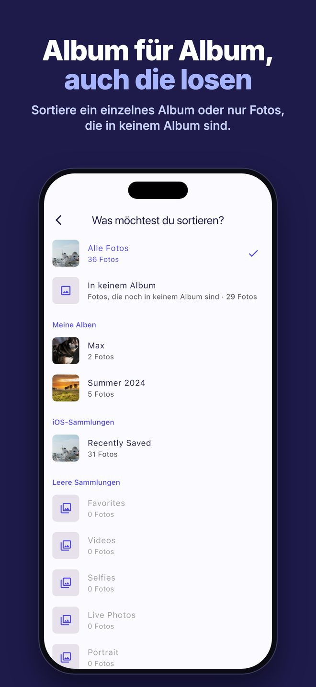
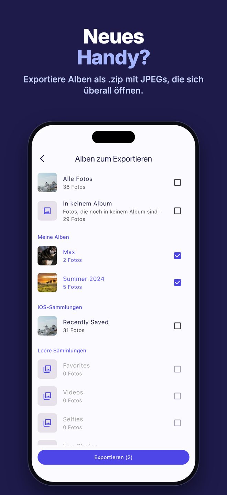
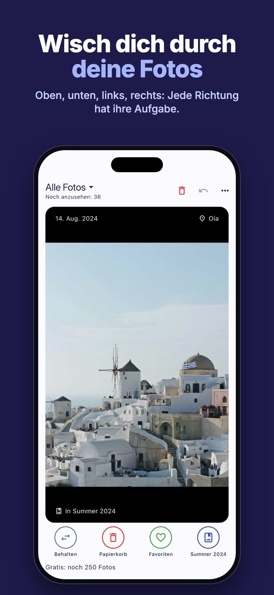
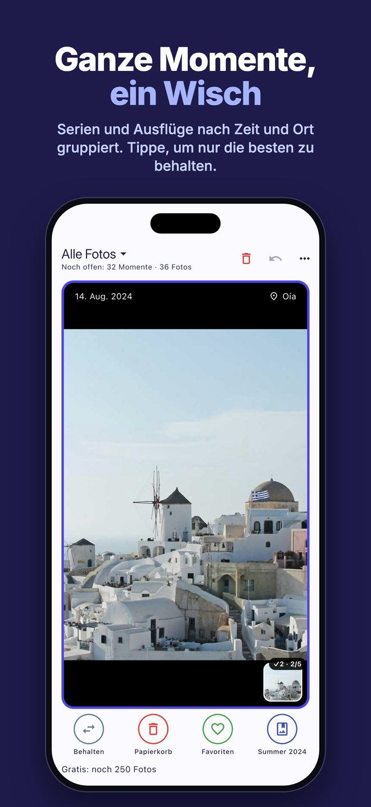
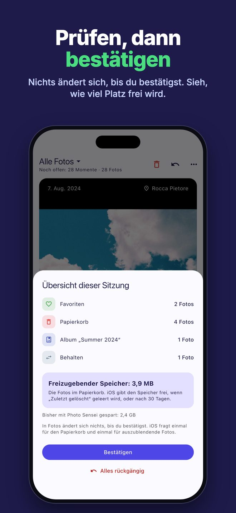

Album für Album
Sortiere die ganze Mediathek, nur Fotos ohne Album oder ein einzelnes Album. Jedes Foto zeigt seine Alben.
Photo Sensei zeigt dir deine Fotos einzeln. Wische nach oben, unten, links oder rechts – du bestimmst, was jede Richtung macht.
Im App Store ladenDie ersten 250 Fotos gratis · dann einmalig 0,99 € · kein Abo

Sortiere die ganze Mediathek, nur Fotos ohne Album oder ein einzelnes Album. Jedes Foto zeigt seine Alben.

Exportiere ein oder mehrere Alben in eine .zip-Datei, ein Ordner pro Album, mit JPEGs, die sich überall öffnen – auch unter Windows.

Behalten, Favoriten, Papierkorb, in ein Album, aus einem Album entfernen oder ausblenden. Alles lässt sich rückgängig machen.

Fotos, die wenige Minuten nacheinander am selben Ort entstanden sind, werden zu einer Karte. Tippe auf die, die du behalten willst: Der Wisch verschiebt nur diese.

Nichts ändert sich, bis du die Sitzungsübersicht bestätigst. Sie zeigt auch, wie viel Speicher frei wird.
Photo Sensei läuft komplett auf deinem iPhone. Kein Konto, keine Cloud, kein Tracking, keine Werbung: „Keine Daten erfasst“.
Nein. Jede Wischgeste ist nur eine Auswahl: In Fotos ändert sich nichts, bis du die Sitzungsübersicht bestätigst. Danach landen Fotos im Papierkorb in „Zuletzt gelöscht“, 30 Tage wiederherstellbar.
Nein. Die ersten 250 Fotos sind gratis, danach schaltet ein einmaliger In-App-Kauf (0,99 € in Deutschland) die App für immer frei.
Nie. Kein Konto, nichts wird an uns gesendet.
JPEG-Kopien der gewählten Alben, ein Ordner pro Album.
Probleme oder Ideen? Schreib an info@optiapp.it.